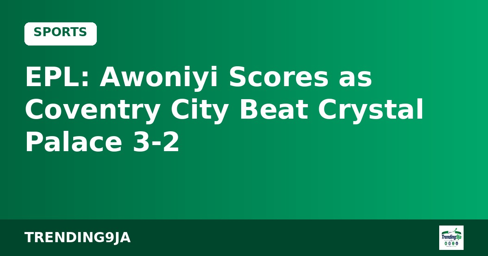
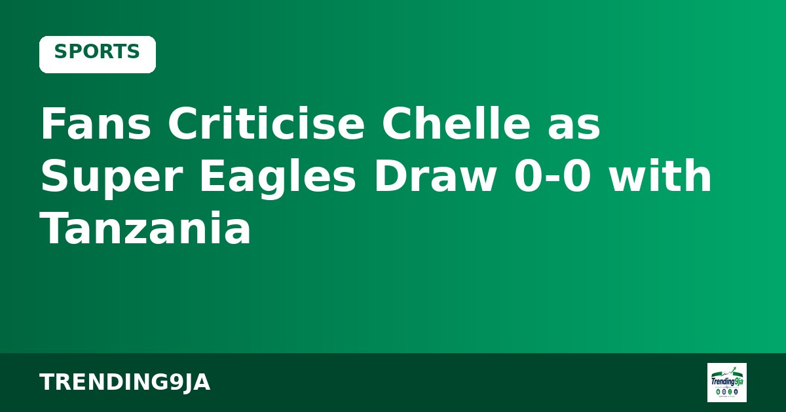
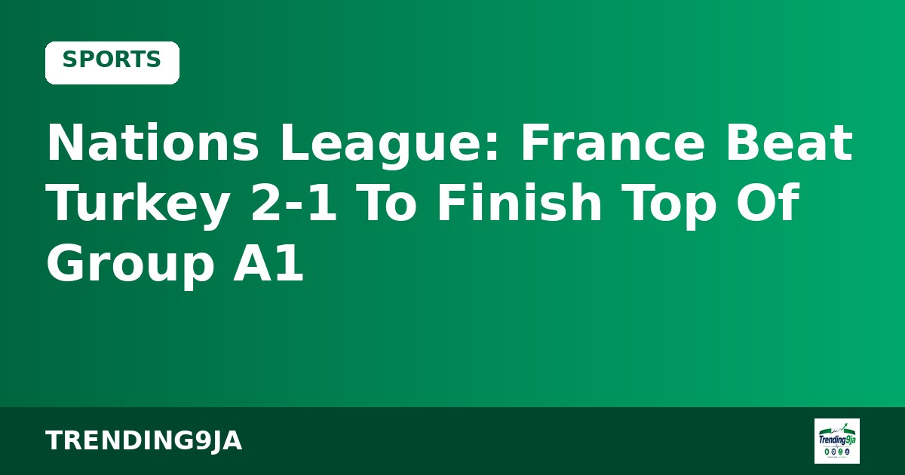

CAF Awards 2026: Flamingos Coach Akeem Busari Nominated for Top Honour
Nigeria's U-17 women's coach Akeem Busari has been nominated for the CAF Women's Coach of the Year Award following his historic World Cup triumph in Morocco.

Nigerian international Taiwo Awoniyi found the net early to help Coventry City defeat Crystal Palace 3-2 at the CBS Arena on Saturday, according to reports from Punch and Daily Post. The result spoiled the debut of new Palace manager Thomas Frank, while handing Frank Lampard's team a vital home victory.
Punch reported that Awoniyi put the host team ahead in the fifth minute with a confident finish from Jack Rudoni's pass, following an impressive move by Yann Gboho. Daily Post added that this was Awoniyi's second English Premier League goal of the season, though he was substituted before the second half commenced.
Palace drew level eight minutes later when Yeremy Pino scored after Jørgen Strand Larsen kept Daichi Kamada's cross alive in the penalty box. Coventry restored their advantage on the half-hour mark when Rudoni set up Tatsuhiro Sakamoto to score with a long-range shot. Palace equalised once more in first-half injury time through a Strand Larsen header.
The match was settled late in the second half following a long throw-in from Milan van Ewijk. Substitute Brandon Thomas-Asante headed towards goal, and after goalkeeper Dean Henderson attempted a save, the ball bounced off Dwight McNeil for an own goal.
According to Daily Post, Nigerian midfielder Frank Onyeka made his return from injury when he came on in the 71st minute for Coventry. The victory lifted Coventry to 13th position in the league standings with 12 points, whereas Punch noted that Crystal Palace remain at the bottom of the table after suffering five straight league defeats.
Sources: Punch · Daily Post
← More Sports stories
Nigeria's U-17 women's coach Akeem Busari has been nominated for the CAF Women's Coach of the Year Award following his historic World Cup triumph in Morocco.

Nigerian fans have voiced disappointment after the Super Eagles were held to a 0-0 draw by Tanzania in their AFCON qualifying fixture in Zanzibar.

France defeated Turkey 2-1 in Bordeaux to finish top of UEFA Nations League Group A1 and secure a seeded spot for the quarter-final draw.
Nigeria's trending news, politics and entertainment, straight to your email.
By subscribing you agree to our Privacy Policy. Unsubscribe any time.